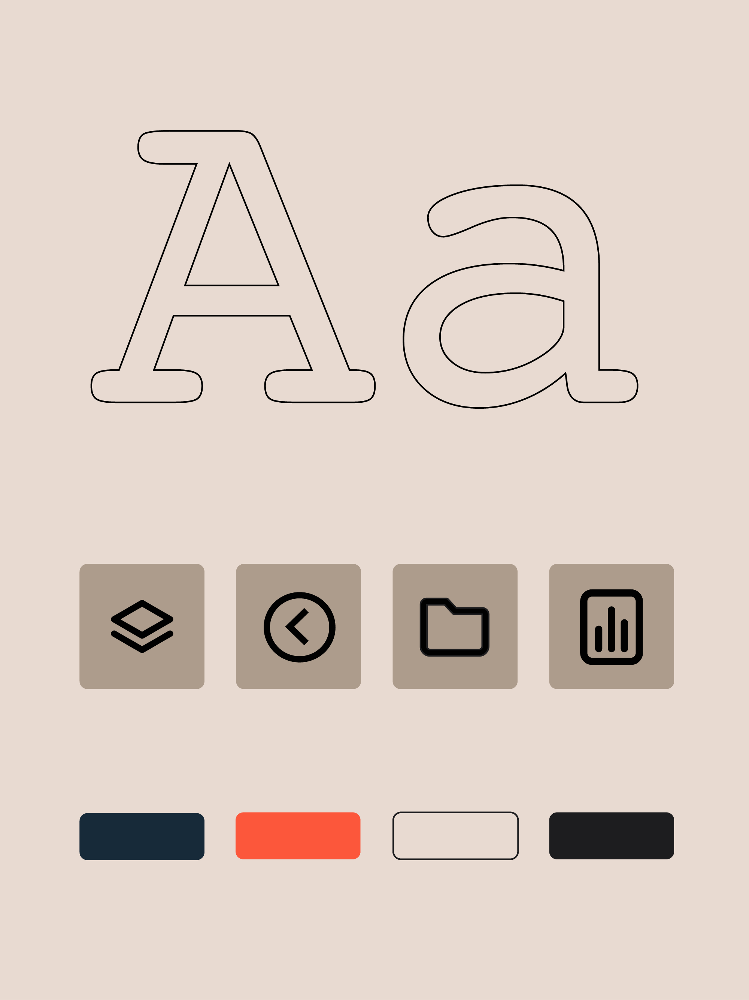
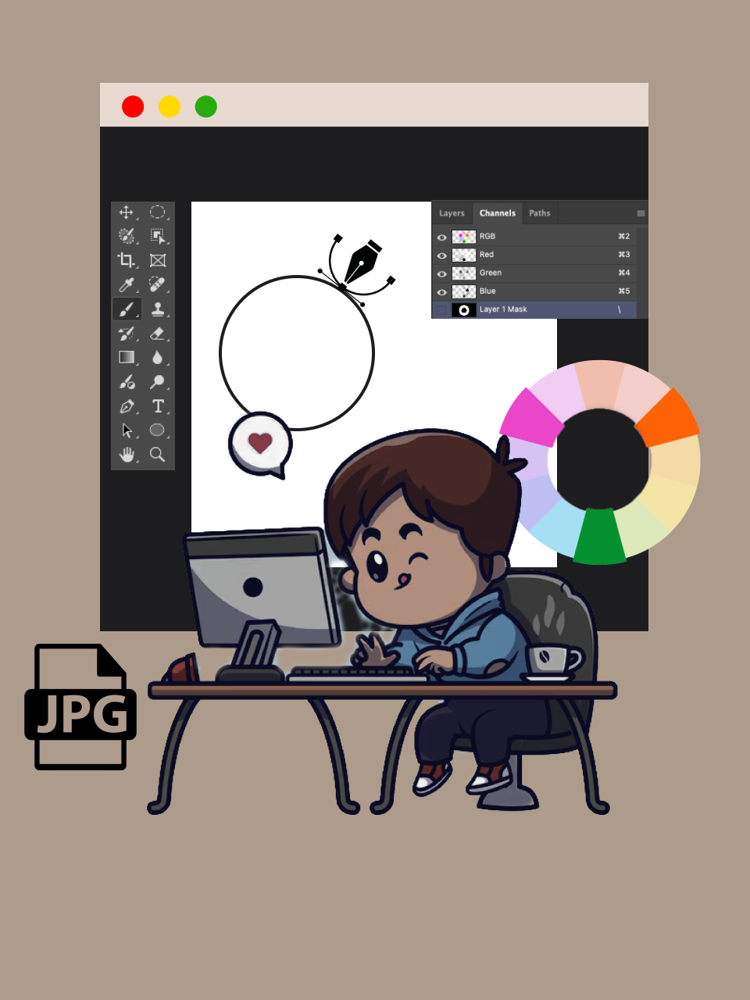
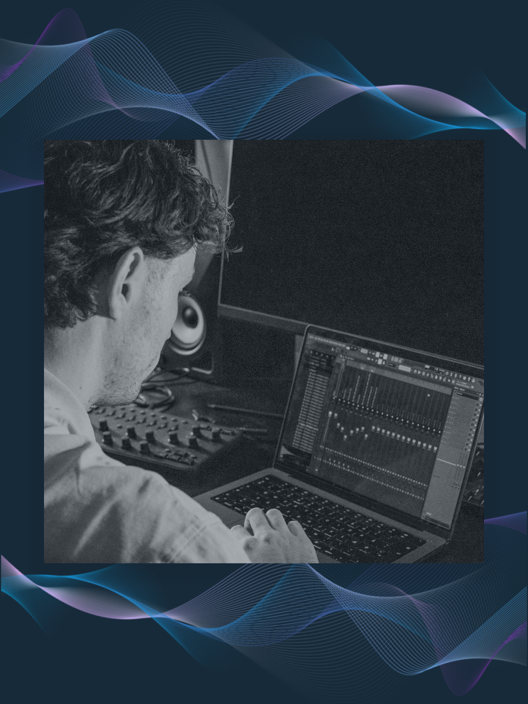

Om mig

Hej! Jeg er Casper – en kreativ multimediedesigner-studerende, der elsker at kombinere teknologi med kreativitet. Jeg er oprindeligt fra Sønderborg, men har boet i Odense siden 2020, hvor jeg har haft mange spændende oplevelser. Jeg har altid været en aktiv person, både når det kommer til fysisk aktivitet og det digitale univers. Jeg har produceret musik i mange år, og min passion for musik og gaming har gjort mig til en haj til computere. Når jeg ikke er i gang med at lave digitale løsninger eller arbejde på mine projekter, kan du finde mig ude i naturen eller i et sportsmiljø, hvor jeg holder mig aktiv. Jeg tror på at finde den perfekte balance mellem kreativitet, funktionalitet og sjov – og altid gøre noget, der giver mening. Hvis du vil vide mere om mig, er jeg altid klar på en god snak!
Min YouTube Kanal: ProdCapio
Anbefalede videoer
Services
Brand identitet
Fremhæve brandets unikke personlighed og værdier gennem design og brugeroplevelse.
- Discovery
- Brand strategi
- Visuelt identitets design
- Brand guidelines
- Logo
Web design

Et gennemarbejdet design, der skaber grundlaget for den mest optimale webopsætningen til jeres behov.
- Website design
- Wireframes
- Figma prototyper
- Responsive & mobile
- UI/UX design
Grafisk design
Fokus på kreativ branding, UI/UX design og visuel kommunikation, der engagerer og formidler klare budskaber.
- Illustrationer
- Visuel storytelling
- Adobe Creative Suite (Illustrator, Photoshop, InDesign)
- Digital og print design
- Layout og komposition
Sound Design
Professionelt sound design til alle typer projekter. Alt fra lydeffekter til hjemmesider og reklamer til skræddersyede lydoplevelser
- Fl Studio, Logic pro
- Sound Design
- Lydeffekter
- Ambient backtracks
- Reklame lyd og kompositioner